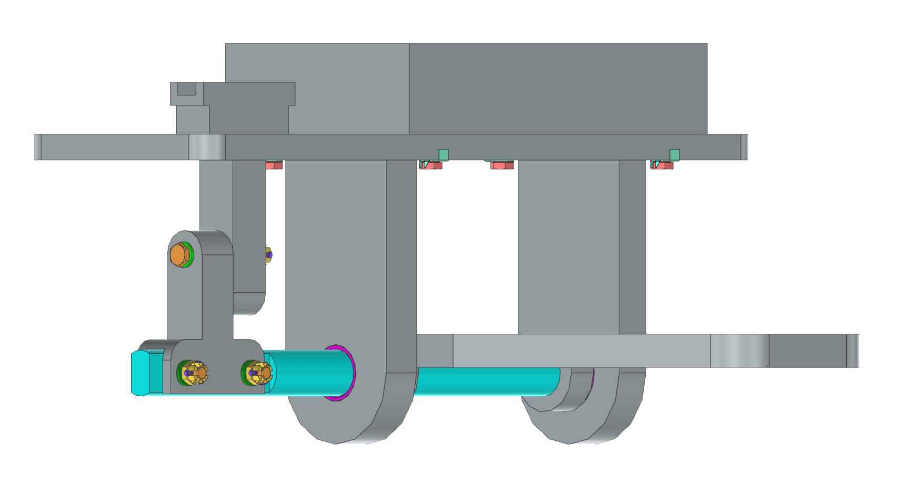
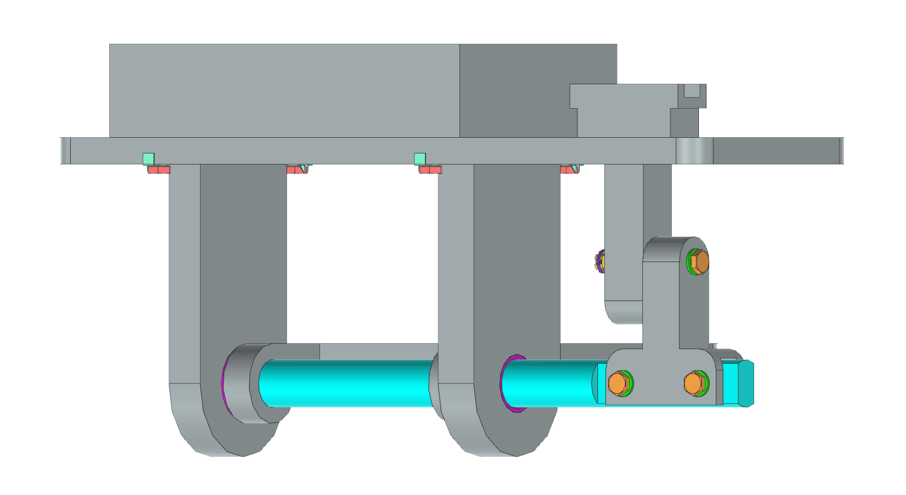

Technische Zeichnung
Everything should be made as simple as possible,
but not simpler.
– Albert Einstein

Rotorbremsansteuerung – Normgerechte technische Zeichnung
Im Rahmen des Moduls Darstellungstechnik im Flugzeugbau entstand eine vollständig normgerechte technische Zeichnung einer mechanischen Rotorbremsansteuerung für einen Hubschrauber. Ziel der Aufgabe war die konstruktive Ausarbeitung und zeichnerische Darstellung einer Baugruppe bestehend aus Lagerbock, Welle, Hebel, Gabel und Schlitten. Grundlage bildete eine vereinfachte Rotorbremsmechanik, wie sie beispielsweise im Rettungshubschrauber eingesetzt wird.
Im Mittelpunkt stand weniger die freie Konstruktion als vielmehr die normgerechte technische Ausarbeitung einer fertigungstauglichen Zeichnung. Neben der Modellierung der Einzelteile wurde eine vollständige Zusammenbauzeichnung mit Passungen, Toleranzen, Normteilen und Stückliste erstellt.
Die Konstruktion und Zeichnungsableitung erfolgte vollständig in Siemens NX, während die verwendeten Luftfahrtnormen über die Normendatenbank Nautos recherchiert wurden.

Konstruktiver Aufbau
Die Baugruppe besteht aus einem Lagerbock, in dem eine Welle drehbar gelagert ist. Auf der Welle sitzt ein Hebel, über den die Bewegung eingeleitet wird. Die Drehbewegung wird über eine Gabel in eine translatorische Bewegung eines Schlittens umgesetzt, der in einer Führung im Lagerbock läuft.
Der Lagerbock bildet das zentrale Bauteil und dient als Montagebasis. Die Welle wird von einer Seite eingeschoben und liegt mit ihrem Ende an der gegenüberliegenden Lagerlasche an. Dadurch werden die Bohrungen der Passschraubenverbindung eindeutig positioniert, während eine axiale Verschiebung nach der Montage ausgeschlossen ist
Die Bauteile wurden in logischer Reihenfolge konstruiert: zunächst der Lagerbock als Referenzgeometrie, anschließend Welle, Hebel und Gabel sowie zuletzt der Schlitten. Aus mehreren Teilbaugruppen entstand anschließend die vollständige Baugruppe, aus der die Zeichnungsableitung erstellt wurde.
Werkstoffe und Normteile
Für die meisten Bauteile wurde die Aluminiumlegierung 3.4365 (EN AW-7075) verwendet. Dieser hochfeste Werkstoff ermöglicht eine gewichtsoptimierte Konstruktion bei gleichzeitig hoher mechanischer Belastbarkeit.
Die Welle wurde aus 1.4542 (X5CrNiCuNb16-4) gefertigt, einem ausscheidungshärtbaren martensitischen Edelstahl (17-4PH), der sich durch hohe Festigkeit und gute Ermüdungsbeständigkeit auszeichnet.
Zur Lagerung der Welle wurden luftfahrtzugelassene Flanschbuchsen eingesetzt:
- EN 2286-18 18 B R L (innere Lagerstelle)
- EN 2286-18 12 B R L (äußere Lagerstelle)
Die Flansche wurden jeweils zur Mitte des Lagerbocks ausgerichtet. Dadurch kann bei unvermeidlichem Spiel und Vibration eine Reibung am Flansch stattfinden, was die Verschleißfestigkeit erhöht.
Zwischen äußerer Buchse und Sacklochboden wurde zusätzlich etwa 1 mm Montagefreiraum vorgesehen.
Passungen und Toleranzen
Die Lagerung der Buchsen im Lagerbock wurde als H7-Passung ausgeführt, wodurch eine sichere Positionierung bei gleichzeitig einfacher Montage erreicht wird.
Besondere Aufmerksamkeit erforderte die Welle:
- Wellendurchmesser: 18f6
- Pressverband Hebel–Welle: 18S7
Der Pressverband sorgt für eine spielfreie Drehmomentübertragung zwischen Hebel und Welle.
Die kritischste Maßkette betraf jedoch die axiale Länge der Welle. Da die Welle im Lagerbock anschlägt und der Hebel anschließend aufgepresst wird, ist ihre Position praktisch festgelegt. Gleichzeitig muss die Verbindung aus Welle, Gabel und Schlitten ausreichend Spiel für die Montage besitzen, ohne die Führung des Schlittens zu beeinträchtigen.
Der Schlitten besitzt nur geringe seitliche Bewegungsfreiheit in der Führung, während gleichzeitig ein Schlittenweg von 20 mm gewährleistet sein muss.
Die endgültige Maßwahl wurde so getroffen, dass ein kleiner zusätzlicher Freiraum für eine sichere Montage verbleibt.
Schraubenverbindungen und Sicherung
Die Befestigung des Lagerbocks am Sockel erfolgt über vier Schrauben nach DIN 65261-05-024 E, die mit Sicherungsblechen nach EN 2948-050 gegen Selbstlösen gesichert wurden. Diese Lösung eignet sich besonders für randnahe Verschraubungen.
Die beweglichen Verbindungen wurden als Passschraubenverbindungen ausgeführt:
- Welle–Gabel: DIN 65339 K 05 020 Z
- Gabel–Schlitten: DIN 65526 K 05 036 T
Zur Sicherung wurden Kronenmuttern DIN 65246-05 E mit Splinten EN 2367-12 014 verwendet. Diese Sicherungsart entspricht den typischen Anforderungen im Luftfahrtbereich und gewährleistet eine zuverlässige Verbindung auch unter Vibration.

Zeichnungsableitung in Siemens NX
Der anspruchsvollste Teil des Projekts war die normgerechte Zeichnungsableitung in Siemens NX.
Während die Konstruktion selbst vergleichsweise geradlinig verlief, erforderte die korrekte Darstellung einen deutlich höheren Aufwand. Ansichten, Schnitte und Bemaßungen mussten exakt nach Norm ausgeführt werden. Häufig war es notwendig, Darstellungen manuell anzupassen oder Elemente auszublenden, um eine normgerechte Zeichnung zu erhalten.
Die Zeichnung entstand schrittweise über Einzelteilzeichnungen, Zusammenbauzeichnung, Stückliste und Normteilbeschriftung.
Fazit
Dieses Projekt stellte meine erste umfassende Erfahrung mit normgerechter Konstruktion im Luftfahrtbereich dar. Im Gegensatz zu früheren Projekten lag der Schwerpunkt hier nicht auf der Fertigung, sondern auf der exakten technischen Definition aller Bauteile.
Die intensive Auseinandersetzung mit Normen, Passungen und Montagebedingungen vermittelte ein deutlich realistischeres Bild davon, wie technische Konstruktion im industriellen Umfeld durchgeführt wird.
Downloads
Die vorliegende Zeichnung zeigt die vollständige normgerechte Ausarbeitung der Baugruppe einschließlich aller Passungen, Toleranzen und Normteile. Die PDF-Datei steht hier als Download zur Verfügung.